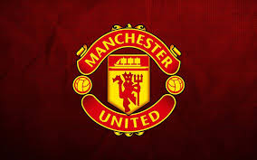

Inicio del futbol
El fútbol, futbol(del inglés británico football) es un deporte de equipo jugado entre dos conjuntos de once jugadores cada uno, mientras los árbitros se ocupan de que las normas se cumplan correctamente.Es, ampliamente, considerado el deporte más popular del mundo, pues lo practican unas 270 millones de personas.
El juego moderno fue reinventado en Inglaterra tras la formación de la Football Association, cuyas reglas de 1863 son la base del deporte en la actualidad. El organismo rector del fútbol es la Federación Internacional de Fútbol Asociación, más conocida por su acrónimo FIFA.
La competición internacional de balompié más prestigiosa es la Copa Mundial, organizada cada cuatro años por dicho organismo. Este evento es el más famoso y el que cuenta con mayor cantidad de espectadores del mundo, doblando la audiencia de los Juegos Olímpicos
El fútbol se juega siguiendo una serie de reglas, llamadas oficialmente reglas de juego. Este deporte se practica con una pelota esférica (de cuero u otro material con una circunferencia no mayor a 70 cm y no inferior a 68 cm, y un peso no superior a 450 g y no inferior a 410 g al comienzo del partido), donde dos equipos de once jugadores cada uno (diez jugadores "de campo" y un guardameta) compiten por encajar la misma en la portería rival, marcando así un gol. El equipo que más goles haya marcado al final del partido es el ganador; si ambos equipos no marcan, o marcan la misma cantidad de tantos, entonces se declara un empate.
Maximos referentes historicos
Como en todo deporte existes un grupo selecto de deportitas que han dejado una huella imobrrable en la historia del futbol la siguente lista contempla a los 3 mejores jugadores de la historia del deporte
Pelé: Considerado uno de los más grandes de todos los tiempos, ganó tres Copas del Mundo con Brasil (1958, 1962, 1970) y anotó más de 1,000 goles en su carrera.

Lionel Messi: Ganador de múltiples Balones de Oro y recientemente campeón del mundo con Argentina en 2022, es conocido por su increíble habilidad y consistencia.

Diego Maradona: Famoso por su habilidad y su gol “La Mano de Dios”, llevó a Argentina a la victoria en la Copa del Mundo de 19862.
Clubes historicos
En funcion de su importancia hisotorica y exitos deportivos existen clubes que han desatcado por sobre el resto
Real Madrid: Con 14 títulos de la UEFA Champions League, es uno de los clubes más exitosos de la historia

FC Barcelona: Conocido por su estilo de juego y su cantera, ha ganado múltiples títulos de liga y Champions League1
Manchester United: Uno de los clubes más exitosos de Inglaterra, con numerosos títulos de Premier League y Champions League
